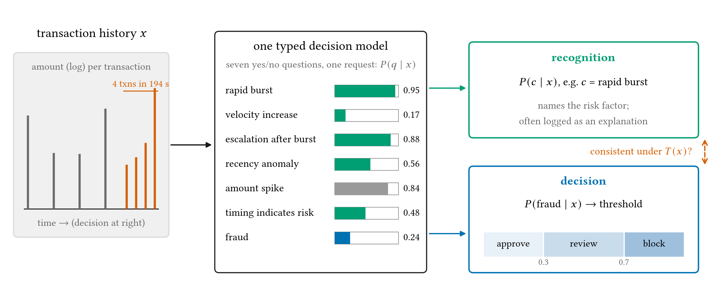
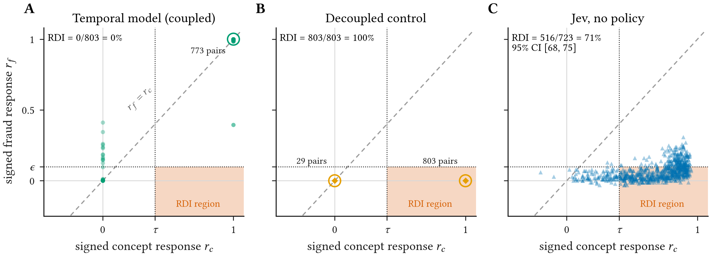
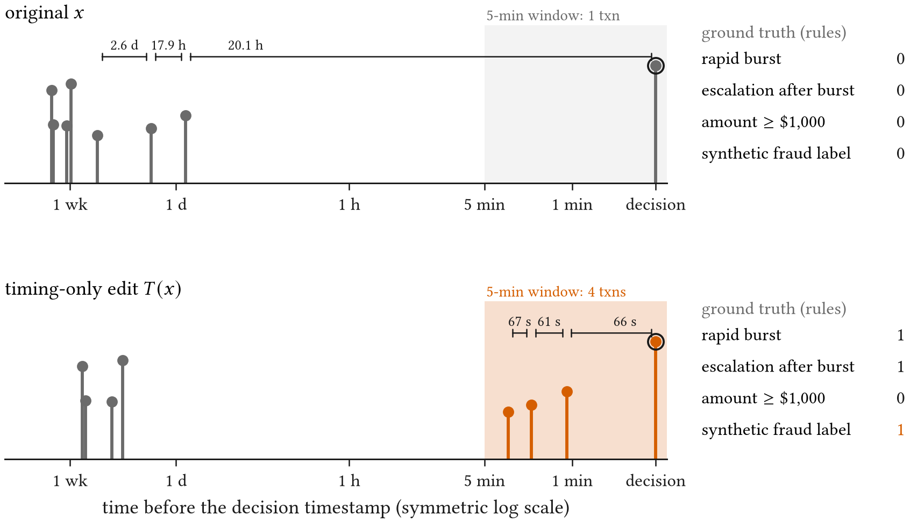
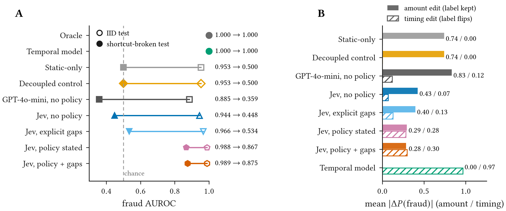
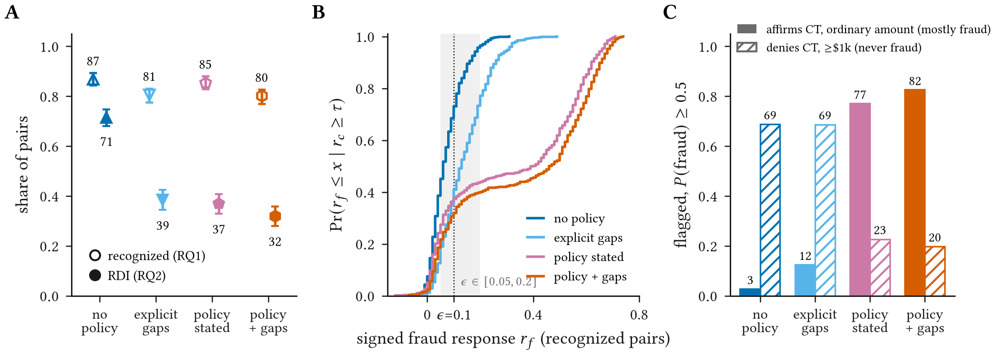
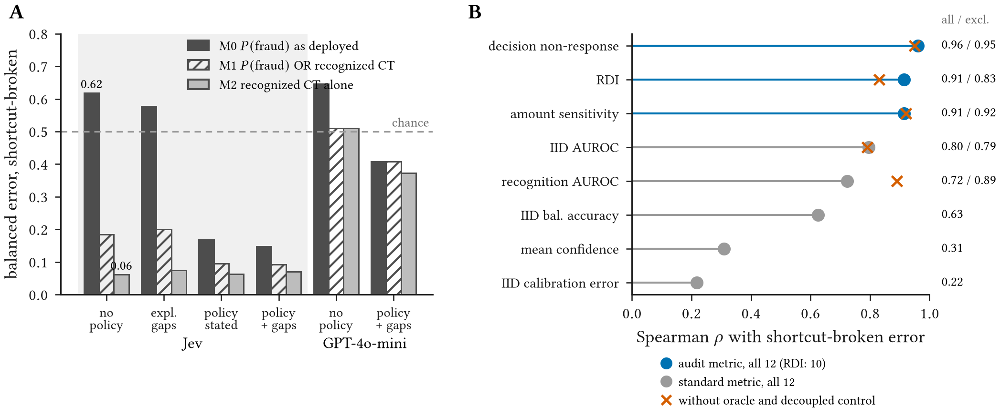
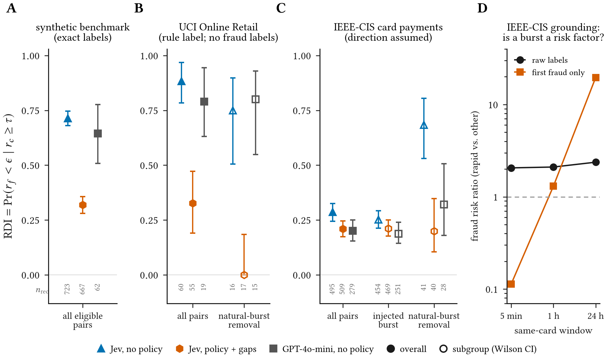

Abstract
Typed decision models return probabilities for several typed questions about the same state. A fraud pipeline can ask “did a card-testing burst just occur?” and “is this transaction fraudulent?”, then threshold the second answer. The output that names a risk factor and the output that drives the action can disagree, which accuracy cannot reveal. We introduce a counterfactual audit of recognition–decision consistency and apply it to TypeSafe’s Jev as a case study. On a synthetic payments benchmark with exact labels, we edit only timestamps to inject or remove card-testing bursts and ask whether the model’s own recognition of the change is matched by its fraud probability. Across 4,948 matched pairs, Jev recognizes the induced pattern in 87% of label-flipping edits (matched AUROC 0.992), yet its fraud probability fails to respond in 71% of the changes it recognizes. Its fraud score tracks amount instead (AUROC 0.944→0.448 when the shortcut is reversed). The inconsistency survives the obvious fix. When the fraud question states the institution’s policy that this exact pattern is fraud, and the time gaps are given explicitly, Jev still recognizes 80% of induced patterns and its fraud probability still fails to respond to 32% of them. Across 12 evaluated system/configuration conditions, the audit’s metrics rank deployment error under shortcut shift better than IID AUROC or calibration. They also identify the fix: composing Jev’s own recognized concept into a transparent rule cuts its deployment error by 90%. A second model, GPT-4o-mini, fails earlier: it rarely recognizes the timing at all. On real data the gap persists but is smaller: on labelled card payments, Jev ignores the removal of naturally occurring bursts in 68% of recognized cases, but responds to injected bursts more often than on synthetic data.
Recognition Is Not Decision
A typed decision model answers several yes/no questions about the same transaction history with probabilities. One answer can name a risk factor, such as a burst of three or more transactions within five minutes, while another, \(P(\mathrm{fraud}\mid x)\), is thresholded into approve, review or block. Accuracy evaluates the second answer on held-out data, but it does not check whether the two answers agree. A log that shows \(P(\text{burst}) = 0.95\) next to an approval records a risk that was seen but not acted on.

The Counterfactual Audit
A timing-only intervention \(T\) changes the timestamps of a history \(x\) and nothing else: amounts, merchants and the decision time stay fixed. Because labels in the benchmark are a known function of \(x\), we know whether the target concept \(c\) and the fraud label flip, and in which directions \(s_c, s_f \in \{-1, +1\}\). The signed responses are
On the 832 pairs where both the concept and the fraud label flip, a consistent model has \(r_c \approx r_f \approx 1\). A change is recognized when \(r_c \ge \tau\). Recognition–decision inconsistency (RDI) is the share of recognized changes whose fraud probability does not move by at least \(\epsilon\) in the correct direction:
\(\epsilon\) is twice the largest change in \(P(\mathrm{fraud})\) observed when identical requests are replayed. Intervals are 95% bootstrap intervals that resample base histories.

Benchmark
A rapid burst is at least three transactions within five minutes. The synthetic fraud event is a burst ending at the current transaction \(n\) whose amount is at least five times the median of the earlier burst transactions:
The absolute amount is not part of the rule. An amount of at least $1,000 is a deliberate shortcut: it accompanies 84% of fraud and 4% of benign histories in the IID test split. In the shortcut-broken split these shares are reversed to 6% and 50%, while the rule stays the same. The benchmark has 4,948 counterfactual pairs built from 800 base histories.

Results
Jev (typesafe/jev-1.13-20260917) was queried through its public API, and its outputs were cached
and never adjusted. It recognizes 87% [84, 89] of label-flipping timing edits (matched AUROC
0.992), yet its fraud probability fails to respond in 71% [68, 75] of recognized cases. The
median fraud response is 0.09 per unit of recognition response, and 78% of recognized changes leave the
approve/review/block action unchanged.
The amount shortcut
Amount edits that leave the label unchanged move Jev's fraud probability by 0.43; timing edits that flip the label move it by 0.07. When Jev itself affirms card testing at an ordinary amount, it flags only 3% of 678 such states. When it denies the pattern but the amount exceeds $1,000, it flags 69% of 1,213 states, none of which are fraud.

Does stating the policy help?
The same Jev snapshot was run with explicit time gaps in the state, with the fraud policy stated in the fraud question, and with both. Stating the policy lowers RDI from 71% to 37%, and to 32% [28, 36] when the gaps are also given. Even then, a policy-defined pattern that Jev recognizes leaves its fraud probability unmoved in a third of cases. Across \(\epsilon \in [0.05, 0.2]\) this RDI ranges from 21% to 40%, compared with 42% to 96% without the policy.

Composition rule
Flagging whenever Jev's own answer \(P(\text{escalation after burst}) \ge 0.5\) lowers its shortcut-broken balanced error from 0.62 to 0.06, a 90% reduction, compared with 0.17 from stating the policy in the prompt. Because that question closely matches the benchmark's labelling rule, the result shows that Jev's recognition is reliable enough to reconstruct the label. It has been evaluated on the synthetic shift only. Across 12 related system and prompt conditions, audit metrics also rank error under this shift better than IID AUROC does (\(\rho = 0.96\) for decision non-response vs. 0.80).

Real Data
On UCI Online Retail purchase histories, which have no fraud labels, the benchmark rule serves as the label. Jev's RDI there is 88% [78, 97], falling to 33% with the policy and gaps. On IEEE-CIS card payments, which carry chargeback labels, rapid activity is a real fraud signal (risk ratio 2.06). Jev's RDI is 29% [24, 33] overall but 68% for the 41 recognized removals of naturally occurring bursts. Here the correct direction is inferred from aggregate association, and Jev's temporal answers add little real-label signal beyond its fraud score (\(p = 0.09\)). The real-data gap is therefore smaller and harder to interpret than the synthetic one.

The Math, Step by Step
Limitations
- The audit is behavioral. It cannot tell whether the model fails to represent the burst or chooses to weight an amount prior more heavily.
- The study covers one Jev snapshot and one comparison model, GPT-4o-mini. The stated policy is looser than the exact rule, and an exact-rule condition was not run.
- The shortcut-broken split is a designed shift. The 12 conditions are related configurations, not independent model families, and the composition rule has not been tested on real data.
- The synthetic rule is not a general definition of fraud. On IEEE-CIS, removing a burst need not lower the risk of an individual transaction, so a weak response there may be justified.
BibTeX
@inproceedings{tiku2026learning,
title = {Learning Time Before Trusting It: Auditing Recognition--Decision Consistency in a Typed Financial Decision Model},
author = {Tiku, Sarvesh and Sharma, Gauri},
booktitle = {ACM ICAIF 2026 Workshop on Financial AI Security, Safety, and Privacy},
year = {2026}
}